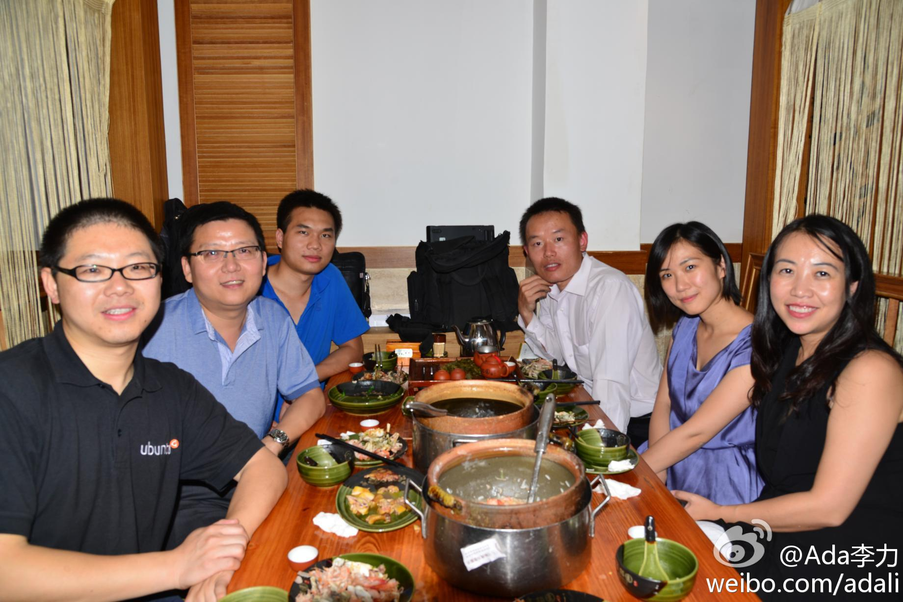
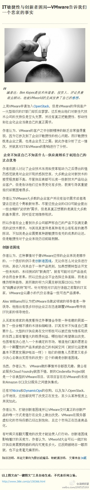
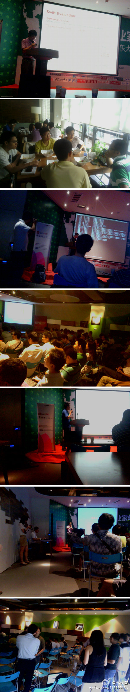

回复@SegmentFault:预言是最不靠谱的事了，大神Paul Granham("黑客与画家"作者)也一样预言错。曾经预言对了的也跟掷骰子差不多。 //@SegmentFault:#Java# 网页链接 由@胡霁 翻译自美国最牛逼创业孵化器YC创始人Paul Graham写于2001年的一篇预言Java的文章 网页链接@外刊IT评论:最新发表《Java的封面 》：不靠谱的人才喜欢Java。基本上我欣赏的大多数程序员都不迷Java。那谁喜欢Java？那些穿着西装的上班族，所了解的编程语言很少，但是他们经常从各种媒体上听说Java 『文章地址： 网页链接 』
回到公司，同事纷纷问在深圳过得不错嘛，这要多谢@俞黎敏 特意从广州赶过来请的晚餐，主菜是虾粥，甲鱼鲍鱼粥，我们在北京的几个都感叹这是最近一段时间吃得最好的一顿饭。从左至右 @ubuntu_motu 瞬联的George Wang @朱荣泽 @俞黎敏 @Adela已注册 和俺。 
#OpenStack#中国行深圳站听到一种观点：你们这些草根型云计算社区看着热闹，很赚眼球，但学术界并不稀罕，也不屑于和你们一起在这个圈里玩，国家有云计算投资的话，会交给国有科研院所，不会给你们。[呵呵]@流蝶紫墨:#IT敏捷性与创新者困局—VMware告诉我们一个悲哀的事实# 编者注：Ben Kepes是技术传道者，投资人、评论员兼商业顾问。他就VMworld的见闻发表了自己的感想。 上周VMware申请加入OpenStack，但是VMware的传统客户—大型组织的IT部门却反应寥寥。这反映出他们对新生代技术公司的... 网页链接 
谢谢这么详细的微博报道。TATA集团在中国承接了不少OpenStack项目，欢迎以后多参与社区活动。@HSIN_Z:首次參與openstack中國深圳行，結識衆多大牛，新浪雲計算技術經理程輝，juju社區大牛侯正鵬，開源社區拓展總監杜玉傑，CSDN社區總監李力，CSDN雲計算社區主編包研，瞬聯軟件研發總監George Wang ，香港數碼港雲計算工程師 Bruce等，大牛們現身說法，生動地講解和分析了openstack在IT界引起的雲計算變革 
2012云计算及数据中心最佳开源软件：OpenStack等上榜 - InfoWorld日前评出了2012年度16个最佳开源云计算和数据中心领域的软件，这其中包括大热门OpenStack，CloudStack和Eucalyptus紧随其后。值得一提的是，Cloud Foundry作为唯一一个PaaS平台入选。 网页链接
@CSDN云计算 报道 OpenStack中国行（深圳站）：香港数码港 瞬联软件 Canonical分享 - 9月22日，OpenStack中国行（深圳站）在3Wcoffee举行，这是OpenStack相关活动首次来到深圳。来自新浪，香港数码港，Ubuntu，瞬联软件等工程师进行了进行了分享。 网页链接
与Marten Mickos面对面：探索开源商业模式 - 从Linux到MySQL，芬达诞生了两大开源软件，Marten Mickos被其芬兰称为继Linux之父Linus Torvalds之后又一民族英雄。在第5期TUP Masters上，MySQL创始人、Eucalyptu... 网页链接 期待后续精彩报道 @CSDN包研
//@Laruence://@AndersGuo://@记者刘向南: 据@周董 ：荔浦事件最新进展是，胸部、腿部各中一枪致半身不遂的村民叶文初在多次上访讨要说法后于9月11日以“妨害公务”被处一年零九个月有期徒刑；至此，所有当年被定性为“暴力抗法”的数十位村民均一一领刑；而非法征地、当晚是否应开枪、开了多少枪、---:该账号因被投诉违反《微博社区公约》的相关规定，现已无法查看。查看帮助 网页链接
 网页链接 由@胡霁 翻译自美国最牛逼创业孵化器YC创始人Paul Graham写于2001年的一篇预言Java的文章
网页链接 由@胡霁 翻译自美国最牛逼创业孵化器YC创始人Paul Graham写于2001年的一篇预言Java的文章